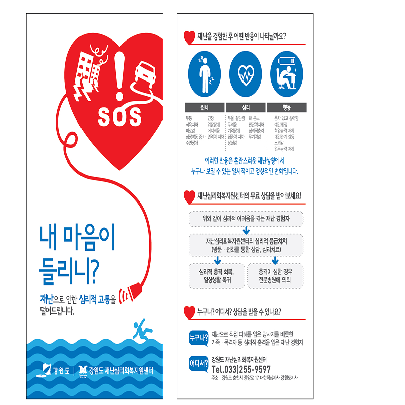
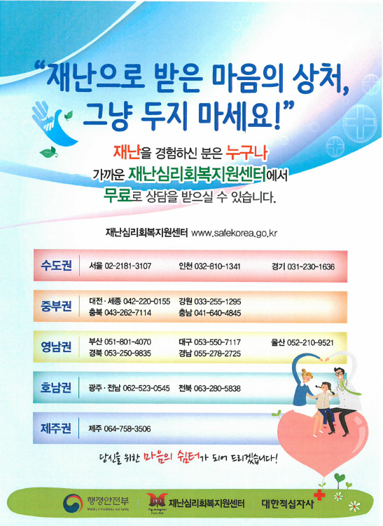
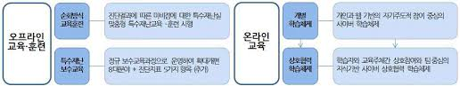
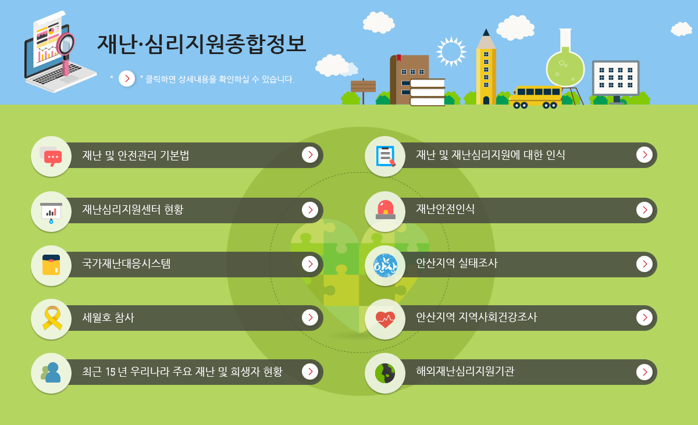

검색
메뉴
아래의 자주 사용하는 메뉴 링크를 이용하세요
해시메뉴1
해시메뉴2
해시메뉴3
해시메뉴4
해시메뉴5
재난예방대비
국민행동요령
준비점검
자율안전점검
재난훈련
비상연락망
민방위
교육/훈련
민방위경보
비상시설
민방위장비
화생방
풍수해보험
풍수해보험안내
가입과 사고신고
뉴스와 정보
고객서비스
재난심리상담
심리회복지원마당
심리회복지원센터
자가진단
재난심리자료실
재난현황
재난사고발생
안전사고경보
지역상황
재난통계
참여와 신고
국민참여
재난심리상담

심리회복지원마당
심리회복지원센터

자가진단

재난심리자료실
